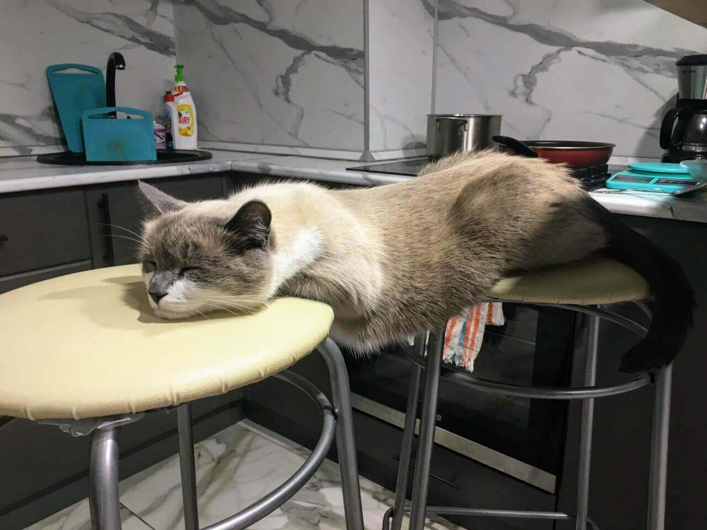
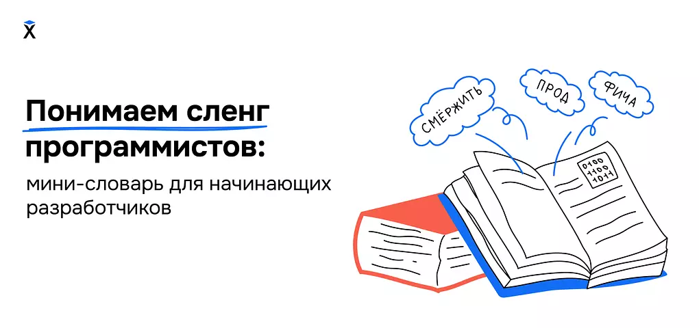
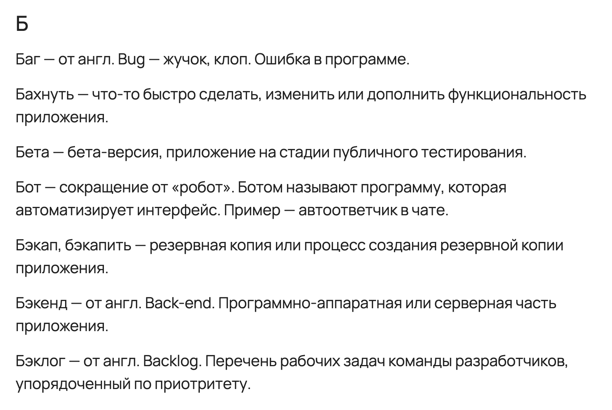
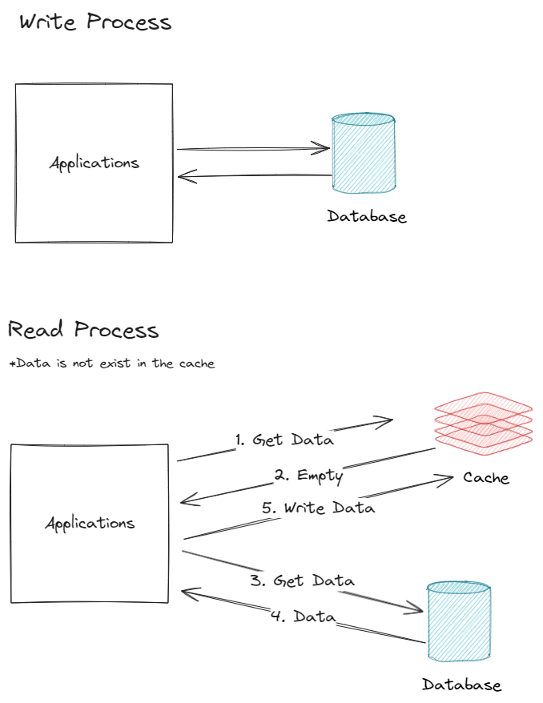
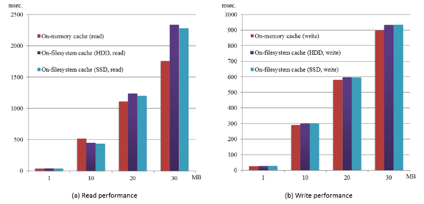
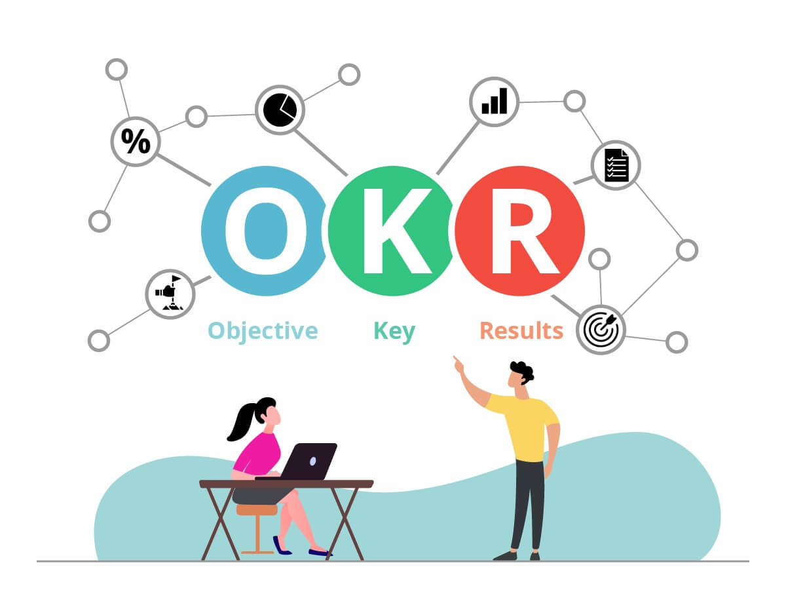
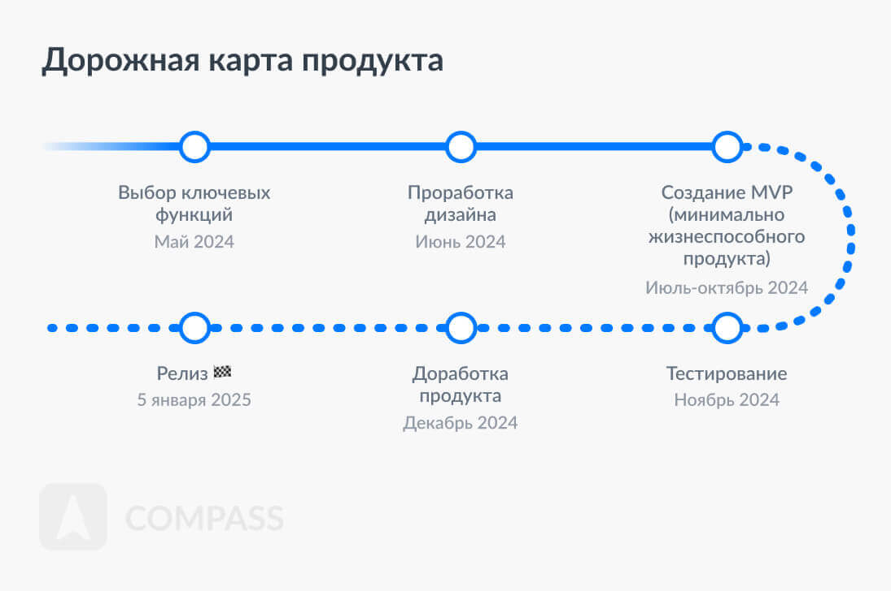
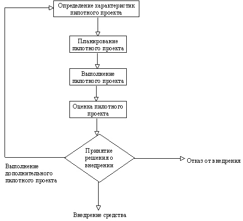

Эффективное общение разработки с бизнесом
Эффективное общение разработки с бизнесом
Андрей Смирнов
@itsmirnov
Медиатор
Дисклеймер
🙊 Моё личное мнение
🤷🏻 Основанное на собственном опыте
Понимаете ли вы, как работает бизнес вашей компании?
Менеджеры бездумно приносят задачи разработке
Когда пришёл на планирование
Но даже если не так?
Разработка vs Бизнес
Любая коммуникация между ними
Проект проваливается / задерживается
Встречали ли такое?
Нужно понимать, что это бизнес
Идеал не достижим
Проблемы взаимодействия разработчиков и бизнеса
Ключевые проблемы
Непонимание приоритетов
Отсутствие общего языка
Необоснованные сроки
Непонимание важности рефакторинга
Сложности с аргументацией технических решений
Постоянные изменения в требованиях
Но почему так происходит?
Разный понятийный аппарат
Бизнес принимает решения на основе данных
Метрики и аналитика
Бизнес ценит быструю обратную связь и адаптацию продукта
Мотивы разработки
Автономия
Мастерство
Цель
Цель как двигатель продуктивности
Зачем этот доклад?
Безопасное доверительное пространство для обсуждений
Если люди чувствуют себя в безопасности
Уверены в возможности влиять на результат
Лучше взаимодействуют с бизнесом
Делятся идеями
Открыто обсуждают проблемы
А мне в чём польза идти навстречу бизнесу?
Почему бизнес-контекст важен?
Улучшает качество работы
Повышает понимание задач
Базово проще работать

Как любой софт скилл, коммуникация влияет на развитие других софтов
Быстрее карьерный рост
Как сделать шаг навстречу?
Пошаговый алгоритм
Подготовка
Научитесь объяснять технические темы на простом языке
Используйте простые аналогии
Оптимизация производительности
Меняешь старый двигатель на более мощный, едешь быстрее с тем же расходом топлива
Разработайте общий язык
Словарь терминов


Визуальные схемы, графики и диаграммы
Влияние кэширования на скорость загрузки страницы


Подготовка
Научитесь объяснять технические темы на простом языке
Выясните стратегические цели компании и проекта
Приближаем понятийный аппарат
Изучите документы компании
Миссия и видение
Цели на ближайший год
Корпоративные презентации и отчеты
Инициируйте встречу с продактом
Попросите объяснить
Какие бизнес-задачи компания пытается решить
Какие метрики при этом важны
Подготовка
Научитесь объяснять технические темы на простом языке
Выясните стратегические цели компании и проекта
Выучите KPI, важные для бизнеса
Ключевые показатели эффективности
Типовые KPI бизнеса
Коэффициенты конверсии
Lifetime Value (LTV)
Количество активных пользователей (MAU)
Удержание пользователей
Мыслим через призму влияния на KPI
Подготовка
Научитесь объяснять технические темы на простом языке
Выясните стратегические цели компании и проекта
Выучите KPI, важные для бизнеса
Сопоставьте текущие задачи разработки с бизнес-целями
Пройдитесь по бэклогу и свяжите задачи с бизнес-целями
Пример
Улучшить производительность приложения
Быстрее выводить продукт на рынок
Улучшить пользовательский опыт
Увеличить конверсию
Контакт
Запросите регулярные встречи с продактом
Просите объяснять влияние задач на метрики успеха
Обсуждение текущих задач и их приоритета со стороны бизнеса
Разница в контексте и ожиданиях
Бизнес видит только фичи и результат, не видя технические сложности
Разработчики не всегда понимают логику приоритетов бизнеса
Фокус на результат
и решение проблемы
Почему требуется та или иная функция?
Какой эффект она окажет на бизнес?
Не стоит просто следовать инструкциям
Контакт
Запросите регулярные встречи с продактом
Просите объяснять влияние задач на метрики успеха
Вовлекайтесь в продуктовые обсуждения на ранних этапах
Раньше вовлекаетесь в процесс, лучше избегаете недопонимания
Поможет аргументировать свои идеи перед руководством
Контакт
Запросите регулярные встречи с продактом
Просите объяснять влияние задач на метрики успеха
Вовлекайтесь в продуктовые обсуждения на ранних этапах
Предлагайте идеи для улучшения продукта с учетом технических возможностей и ограничений
Будьте гибкими, предлагайте альтернативные решения
Быть в продуктовой команде
Мыслить как предприниматели, а не просто исполнители
Понимать цели и видение продукта
Видеть себя как часть бизнеса
Помогает неожиданным образом
Микроменеджмент
Внимательно слушайте и подтверждайте понимание
Активное слушание
Подстраивайтесь под стиль общения собеседника
Сонаправленность
Согласуйте приоритеты между разработчиками и бизнесом
Совместное планирование
Используйте метрики, понятные всем
Скорость разработки для бизнеса
Качество кода для разработчиков
Или объясните совместные метрики для каждой стороны
Time to Market
💼 Позволяет оценить скорость реакции на потребности рынка и конкуренцию
👨🏻💻 Оценивает эффективность процессов разработки, тестирования и деплоя
Deployment Frequency
💼 Демонстрирует скорость вывода обновлений и новых функций, что влияет на конкурентоспособность
👨🏻💻 Показывает эффективность CI/CD, качество кодовой базы и способность оперативно обновлять продукт
Change Failure Rate
💼 Влияет на стабильность работы продукта и удовлетворённость клиентов
👨🏻💻 Оценивает качество тестирования, код-ревью и архитектуры

Ведите записи всех принятых решений
Приоритеты могут меняться с течением времени
Сонаправленность
Согласуйте приоритеты между разработчиками и бизнесом
Обеспечьте более реалистичные ожидания со стороны бизнеса
Как добиться реалистичных сроков
Проводите оценку совместно с бизнесом
Используйте гибкие методологии
Демонстрируйте прогресс на промежуточных этапах
Снизит давление на команду
Сонаправленность
Согласуйте приоритеты между разработчиками и бизнесом
Обеспечьте более реалистичные ожидания со стороны бизнеса
Уменьшить количество неожиданных изменений в требованиях
Больше разговаривайте с бизнесом
Четкая дорожная карта

Донесение технической важности
Донести до бизнеса ценность рефакторинга
Почему рефакторинг важен для бизнеса?
Снижение рисков
Ускорение time-to-market
Технический долг
💼 Помогает понять, как может замедлиться развитие продукта и привести к увеличению затрат
👨🏻💻 Оценивает качество кодовой базы и необходимость в ресурсах на поддержку и улучшение архитектуры
Как объяснить важность рефакторинга?
Объясняйте через бизнес-метрики:
производительность, стабильность
Как объяснить важность рефакторинга?
Объясняйте через бизнес-метрики:
производительность, стабильность
Найдите баланс между улучшениями
и бизнес-потребностями
MVP (Minimum Viable Product) и MLP (Minimum Loveable Product)
Как объяснить важность рефакторинга?
Объясняйте через бизнес-метрики:
производительность, стабильность
Найдите баланс между улучшениями
и бизнес-потребностями
Покажите экономический эффект через
долгосрочные выгоды
Предложите регулярно выделять время
на технический долг
Матрица Эйзенхауэра
Покажите, как неуправляемый технический долг привел к сбоям
Реакция продакта
Донесение технической важности
Донести до бизнеса ценность рефакторинга
Упростить продвижение технических инициатив
Почему тяжело продвигаются технические инициативы?
Технические инициативы воспринимаются как затратные
Отсутствие связи с бизнес-метриками
Примеры для аргументации
Снижение времени на внедрение новых фич
Уменьшение числа багов в продукте
Уменьшение времени на поддержку благодаря улучшенной архитектуре
Сравните систему с регулярно обслуживающимся автомобилем
Презентация
Как готовить презентацию
для менеджеров?
Структура презентации
Проблема
Решение
Бизнес-выгоды
Как адаптировать аргументы под аудиторию
CTO: технические детали и риски
CPO: бизнес-метрики, выгоды
Пример
Примеры для аргументации
Рефакторинг может уменьшить время на разработку новых фич на 15%
Улучшение производительности сократит количество отказов пользователей на мобильных устройствах
Если ускорить загрузку на 2 секунды, то это повысит доход компании на 1 процент
Публичные
выступления
Уверенно доносите идеи
Убеждаете руководство
выделить деньги
Предлагайте пилоты и этапное внедрение для снижения рисков

Не бойтесь предлагать прототипы
Проверить гипотезы
Не углубляться в разработку полноценного решения
Сразу увидеть реакцию бизнеса
Долгосрочные взаимоотношения
Стройте доверительные отношения с бизнес-менеджментом
Более тесно взаимодействуем
Долгосрочные взаимоотношения
Стройте доверительные отношения с бизнес-менеджментом
Постоянно запрашивайте фидбэк и сами его предоставляйте
Регулярные ретроспективы
Долгосрочные взаимоотношения
Стройте доверительные отношения с бизнес-менеджментом
Постоянно запрашивайте фидбэк и сами его предоставляйте
Развивайте коммуникационные навыки и пробуйте новое
Ротируйтесь с разработчиками из других частей бизнеса
Мы не изменим базу
Бизнес будет ждать быстрых результатов, разработчики — устойчивости системы
Технический долг будет игнорироваться в пользу новых фич
Важна попытка диалога
Получите поддержку
Быстрее дождётесь повышения
Комфорт
Вопросы?
@itsmirnov